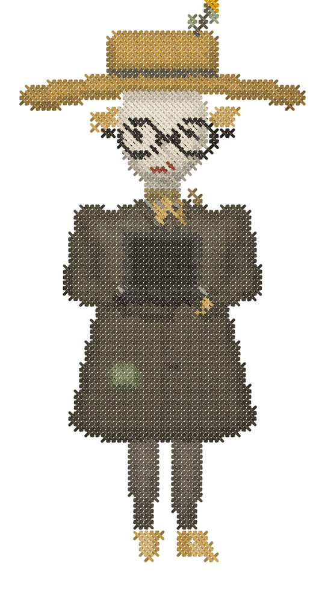
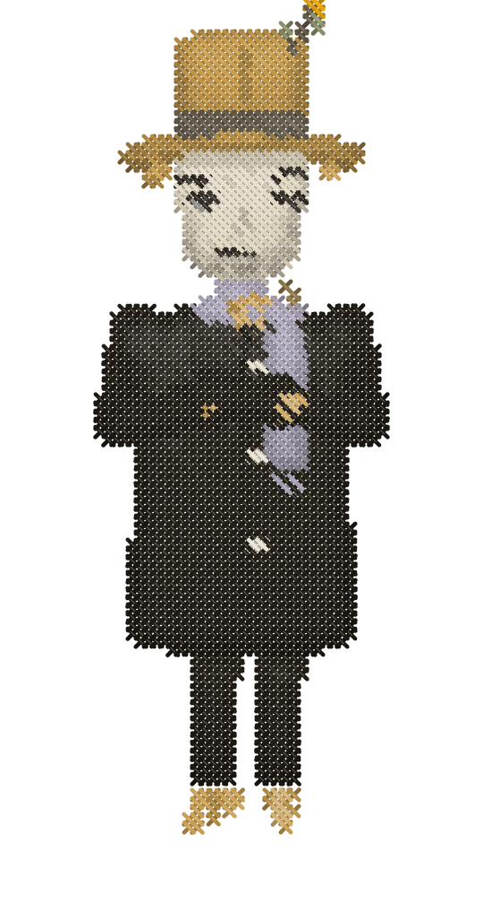

AfterHarvest builds and runs the entire event, you show up and teach, and we only get paid from what the launch collects. It’s $0 upfront, with a revenue floor we put in writing before we start. The exact plan, our entire offer, and our two guarantees are all in the video below.


Wondering if a 3-day event would work for your offer specifically? We’ll make you a plan built around your own offer, numbers, and audience - the topic, the structure, and the numbers we’d project. Answer the questions below. Takes ~5 minutes, and the AfterHarvest team will send you the plan in 24–48 hours.
Already know you want to run one? Grab a time. Thirty minutes, and you'll leave with the shape of your event and the revenue floor we'd put in writing.